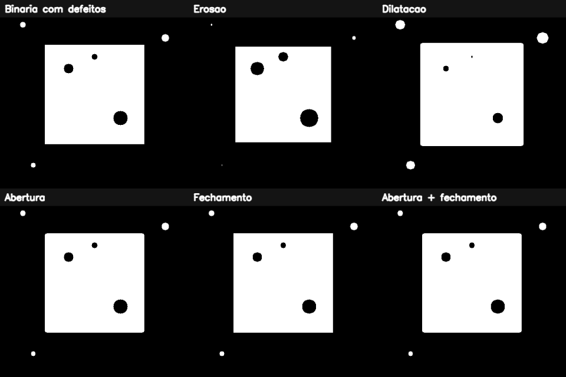

4. Limiarização e morfologia matemática¶
O que você aprenderá¶
Neste capítulo, você aprenderá a transformar uma imagem de intensidades em uma decisão espacial: quais pixels pertencem ao objeto e quais pertencem ao fundo. Depois, aprenderá a corrigir pequenas imperfeições dessa decisão por meio de operações morfológicas.
Ao final, você deverá conseguir:
- compreender o conceito de limiarização;
- diferenciar limiar fixo, Otsu e limiar adaptativo;
- interpretar um histograma antes de escolher o método;
- compreender polaridade de primeiro plano e fundo;
- criar elementos estruturantes;
- explicar erosão e dilatação;
- explicar abertura e fechamento;
- usar gradiente morfológico;
- relacionar tamanho de kernel à escala do objeto;
- compreender por que morfologia não “entende” semanticamente a imagem;
- montar pipelines de binarização + morfologia;
- diagnosticar falhas causadas por iluminação irregular.
A limiarização é uma das formas mais simples de segmentação de imagens, mas seu desempenho depende fortemente da distribuição das intensidades e das condições de aquisição (GONZALEZ; WOODS, 2010). O método de Otsu automatiza a escolha do limiar sob uma hipótese estatística de separação entre classes (OTSU, 1979).
4.1 Da intensidade para uma decisão¶
Uma imagem em tons de cinza possui diversos níveis. A limiarização transforma essa escala em uma decisão binária.
Para um limiar T:
Analogia: catraca de altura¶
A altura de uma pessoa pode assumir muitos valores, mas a catraca toma uma decisão binária: passa ou não passa. O limiar faz algo parecido com a intensidade do pixel.
4.2 Limiar fixo¶
Exemplo 1¶
cinza = cv2.cvtColor(imagem, cv2.COLOR_BGR2GRAY)
_, binaria = cv2.threshold(
cinza,
127,
255,
cv2.THRESH_BINARY
)
Aqui:
- valores maiores que
127viram255; - os demais viram
0.
O primeiro valor retornado é o limiar utilizado; o segundo é a imagem resultante.
4.3 Polaridade importa¶
Com THRESH_BINARY, pixels acima do limiar ficam brancos. Com THRESH_BINARY_INV, ocorre o contrário.
Morfologia depende de quem é o primeiro plano
Em muitas explicações, considera-se que o objeto de interesse é branco. Se o objeto estiver preto, erosão e dilatação parecerão produzir o efeito “contrário”.
4.4 O histograma ajuda a escolher¶
Um histograma mostra quantos pixels existem em cada faixa de intensidade.
Se uma imagem contém:
- fundo escuro;
- objeto claro;
podem aparecer dois grupos separados.
Analogia: duas turmas em uma prova¶
Imagine as notas de duas turmas: uma concentrada perto de 30 e outra perto de 80. Um valor intermediário pode separar razoavelmente os grupos. O histograma bimodal possui lógica semelhante.
4.5 Método de Otsu¶
O método proposto por Otsu (1979) testa limiares possíveis e seleciona aquele que melhor separa duas classes em termos de variância intra-classe.
Exemplo 2¶
limiar, binaria_otsu = cv2.threshold(
cinza,
0,
255,
cv2.THRESH_BINARY + cv2.THRESH_OTSU
)
print("Limiar escolhido:", limiar)
A vantagem é não escolher manualmente T.
Mas Otsu não “vê objetos”¶
Ele analisa distribuição de intensidades. Se a cena tiver iluminação muito irregular ou várias classes sobrepostas, a separação pode falhar.
4.6 Por que suavizar antes de Otsu?¶
Ruído cria pequenas flutuações no histograma.
suave = cv2.GaussianBlur(cinza, (5, 5), 0)
_, otsu = cv2.threshold(
suave,
0,
255,
cv2.THRESH_BINARY + cv2.THRESH_OTSU
)
Isso não é obrigatório, mas pode estabilizar a decisão quando o ruído é pequeno e distribuído.
4.7 Limiar adaptativo¶
Quando a iluminação muda ao longo da imagem, um único T pode ser inadequado.
O limiar adaptativo calcula uma decisão local.
adaptativa = cv2.adaptiveThreshold(
cinza,
255,
cv2.ADAPTIVE_THRESH_GAUSSIAN_C,
cv2.THRESH_BINARY,
21,
5
)
Analogia: regras locais¶
Em vez de usar uma única média salarial para comparar bairros muito diferentes, calculamos uma referência dentro de cada região.
4.8 O que é morfologia matemática?¶
A morfologia analisa a forma de regiões usando um elemento estruturante. Em uma imagem binária, esse elemento atua como uma pequena sonda que percorre a máscara (GONZALEZ; WOODS, 2010).
Analogia: carimbo¶
Imagine um carimbo rígido percorrendo uma forma. Dependendo da operação, perguntamos se o carimbo cabe totalmente ou se basta tocar o objeto.
4.9 Criando elementos estruturantes¶
retangular = cv2.getStructuringElement(
cv2.MORPH_RECT,
(5, 5)
)
eliptico = cv2.getStructuringElement(
cv2.MORPH_ELLIPSE,
(5, 5)
)
cruz = cv2.getStructuringElement(
cv2.MORPH_CROSS,
(5, 5)
)
A forma do kernel influencia quais estruturas são preservadas.
4.10 Erosão¶
Na erosão, uma região branca tende a encolher.
Intuição¶
Um pixel branco só permanece quando a vizinhança exigida pelo elemento estruturante também satisfaz a condição.
Usos¶
- remover pontos brancos pequenos;
- separar objetos ligados por pontes estreitas;
- reduzir espessura.
Risco¶
Detalhes válidos também podem desaparecer.
4.11 Dilatação¶
A dilatação expande regiões brancas.
Usos¶
- preencher pequenas falhas;
- conectar regiões próximas;
- aumentar espessura.
Analogia¶
É como engrossar o traço de uma caneta.
4.12 Abertura¶
Abertura é:
Ela tende a remover pequenos objetos brancos sem manter todo o encolhimento causado pela erosão.
Analogia: peneira¶
Partículas menores do que a abertura da peneira desaparecem; estruturas grandes continuam.
4.13 Fechamento¶
Fechamento é:
Ele tende a fechar pequenos buracos e fendas pretas.
Analogia: rejunte¶
É como preencher pequenas fissuras e depois remover o excesso.
4.14 Gradiente morfológico¶
O gradiente morfológico é a diferença entre dilatação e erosão.
O resultado destaca uma faixa ao redor das fronteiras.
4.15 Top-hat e black-hat¶
Essas operações são úteis para destacar estruturas pequenas em relação ao fundo.
tophat = cv2.morphologyEx(
cinza,
cv2.MORPH_TOPHAT,
kernel
)
blackhat = cv2.morphologyEx(
cinza,
cv2.MORPH_BLACKHAT,
kernel
)
- top-hat: realça elementos claros menores que o elemento estruturante;
- black-hat: realça elementos escuros menores que o elemento estruturante.
São úteis, por exemplo, em preparação de texto e correção local de iluminação.
4.16 O tamanho do kernel representa uma escala¶
Um kernel 3 × 3 e um 15 × 15 têm efeitos muito diferentes.
Se um defeito mede cerca de 4 pixels, um kernel pequeno pode removê-lo. Se um objeto válido também mede 4 pixels, o mesmo kernel pode destruí-lo.
Pixels não são uma unidade física universal
Se a resolução da câmera dobrar, o mesmo defeito físico poderá ocupar o dobro de pixels. Parâmetros morfológicos precisam considerar a escala do sistema.
4.17 Iterações¶
Três iterações ampliam o efeito. Isso pode ser útil, mas também pode alterar profundamente a forma.
Nunca escolha iterações apenas porque “parece funcionar” em uma única imagem.
4.18 Pipeline típico¶
imagem
↓
tons de cinza
↓
suavização
↓
limiarização
↓
abertura para remover pontos
↓
fechamento para preencher falhas
↓
contornos / medidas
A ordem importa. Fazer fechamento antes de abertura pode produzir um resultado diferente.
4.19 Exemplo integrado do capítulo¶
O código do capítulo 4 cria um objeto com defeitos e compara técnicas de segmentação e morfologia.
Pipeline ampliado:
imagem com iluminação/ruído
↓
limiar fixo
↓
Otsu
↓
limiar adaptativo
↓
erodir / dilatar
↓
abrir / fechar
↓
gradiente
↓
painel comparativo

4.20 Erros comuns¶
| Sintoma | Causa provável | Correção |
|---|---|---|
| objeto some após erosão | kernel grande/iterações demais | reduza escala |
| buraco cresce em vez de fechar | polaridade invertida | confira primeiro plano |
| Otsu falha sob sombra | limiar global inadequado | teste adaptativo/correção de iluminação |
| objetos distintos se unem | dilatação excessiva | reduza kernel/iterações |
| ruído não sai com abertura | ruído maior que o kernel | ajuste escala |
| cantos mudam demais | kernel incompatível com a forma | teste elipse/cruz/retângulo |
| resultado varia com resolução | kernel fixo em pixels | normalize escala |
4.21 Perguntas de revisão¶
- O que a limiarização transforma?
- Qual diferença existe entre
THRESH_BINARYeTHRESH_BINARY_INV? - Qual hipótese favorece Otsu?
- Por que Otsu pode falhar sob iluminação irregular?
- O que representa o elemento estruturante?
- O que acontece com objetos brancos na erosão?
- E na dilatação?
- Qual é a ordem da abertura?
- Qual é a ordem do fechamento?
- Por que o tamanho do kernel deve ser relacionado à escala do problema?
Exercícios de fixação¶
Parte A — limiarização¶
Exercício 1¶
Crie um gradiente horizontal de 0 a 255 e aplique limiares 64, 128 e 192.
Exercício 2¶
Crie duas regiões de intensidade 70 e 190, adicione ruído e aplique Otsu. Registre o limiar escolhido.
Exercício 3¶
Gere uma imagem com fundo em gradiente e objeto claro. Compare Otsu e adaptiveThreshold.
Exercício 4¶
Compare THRESH_BINARY e THRESH_BINARY_INV e explique o impacto sobre a morfologia.
Parte B — operações básicas¶
Exercício 5¶
Crie uma máscara com pontos brancos pequenos e aplique erosão com três tamanhos de kernel.
Exercício 6¶
Crie dois objetos separados por três pixels e teste quantas iterações de dilatação são necessárias para uni-los.
Exercício 7¶
Crie uma máscara com ruído externo e buracos internos. Aplique abertura e fechamento separadamente.
Exercício 8¶
Aplique fechamento seguido de abertura e depois inverta a ordem. Compare.
Parte C — kernels¶
Exercício 9¶
Compare kernels retangular, elíptico e cruz em uma forma circular.
Exercício 10¶
Dobre a resolução da imagem e ajuste o kernel para manter aproximadamente o mesmo efeito físico.
Parte D — desafios¶
Exercício 11¶
Implemente um pipeline que conte objetos após remover ruído por abertura.
Exercício 12¶
Use MORPH_TOPHAT para realçar pequenos elementos claros em fundo irregular.
Exercício 13¶
Use MORPH_BLACKHAT para destacar texto escuro sobre uma região clara com variação de iluminação.
Exercício 14¶
Explique por que morfologia não pode distinguir automaticamente “ruído” de um objeto verdadeiro com o mesmo tamanho e formato.
Síntese¶
Limiarizar significa converter intensidade em decisão. Morfologia significa modificar essa decisão usando uma noção explícita de vizinhança e escala. Otsu, limiar adaptativo, erosão, dilatação, abertura e fechamento são ferramentas simples, mas seu resultado depende de hipóteses sobre iluminação, polaridade, tamanho das estruturas e resolução da imagem.
Referências¶
GONZALEZ, Rafael C.; WOODS, Richard E. Processamento Digital de Imagens. 3. ed. São Paulo: Pearson, 2010.
OTSU, Nobuyuki. A threshold selection method from gray-level histograms. IEEE Transactions on Systems, Man, and Cybernetics, v. 9, n. 1, p. 62-66, 1979.
SZELISKI, Richard. Computer Vision: Algorithms and Applications. 2. ed. Cham: Springer, 2022.